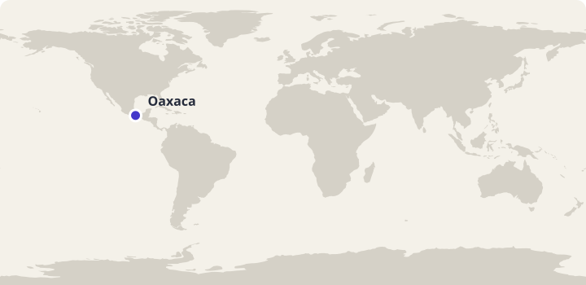
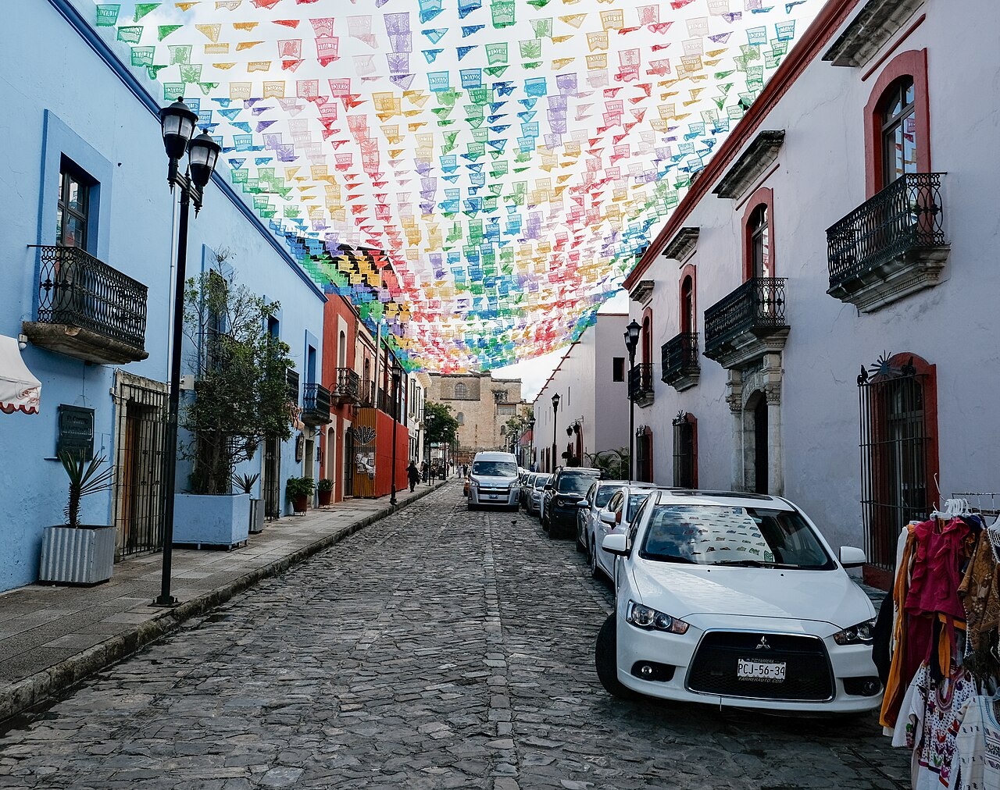
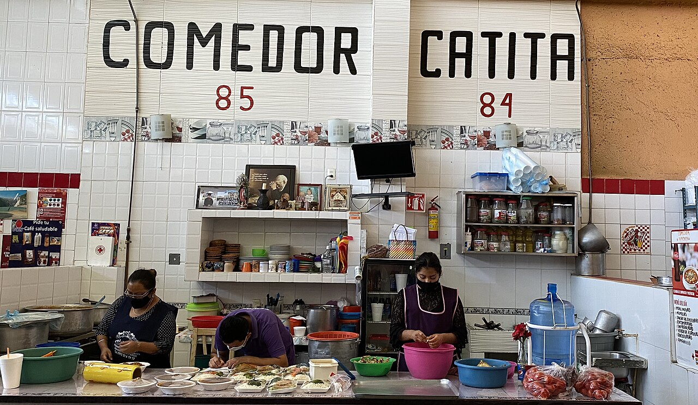

Arbeidsutkast · til lærervurdering
45 minutter · les, oversett og sammenlign
Mexico: Un día en Oaxaca
En lørdag med Elena: markedet, maisen og språkene i Oaxaca.
Bli med Elena gjennom en dag i Oaxaca. Les høyt og oversett muntlig i par. Svar på spørsmålene, snakk om hverdagslivet og øv på ordene fra teksten. Elena og familien er fiktive; stedene og kulturinnslagene bygger på kildene nedenfor.

Oaxaca i Mexico. Kartgrunnlag: Natural Earth. Markøren viser byens omtrentlige plassering.
Les og oversett i par
- Les teksten høyt sammen. Bytt på å lese ett avsnitt hver.
- Oversett ett avsnitt om gangen muntlig til norsk. Pek eller trykk på understrekede ord når dere trenger hjelp.
- Hjelp hverandre med ord og setninger dere er usikre på.
Pek eller trykk på understrekede ord i teksten for å se norsk oversettelse. Numrene i bildene viser bildeord.
Nord-Amerika · Mexico
Un día en Oaxaca

Bildet kunne ikke lastes. Du kan fortsatt lese teksten og bruke ordoppslagene.
Om bildet
Cobbled street - Oaxaca de Juárez, 2022-08.jpgDato: 2022Nedskalert av Commons; ikke beskåret. Nummererte ordpunkter lagt over bildet.
- el coche bilen
- la calle gaten
- el balcón balkongen
Elena, y en la ciudad de Oaxaca, en de México. con . y para . y . En casa , y . quiere chocolate para preparar .
en el mercado Benito Juárez, de la ciudad. Hay con , y otros productos. y veo personas que . junto a de . . cuál y cuál puede .


En otro puesto vemos de . El en la comida mexicana. Con él y muchos otros . En mi familia comemos con . A mí me gusta ver cómo puede aparecer en la mesa. Compramos también para hacer .
Oaxaca es donde muchas . están las zapotecas, con . me recuerda que una lengua puede , nombres y . Yo hablo español, y aprendemos a las otras . Quiero conocer más palabras, pero tengo que .
Después de , un momento. pide de chocolate y yo . La bebida está caliente, espero . Hablamos de lo que vamos a cocinar. y la . a preparar la salsa mi hermano en la mesa.
Más tarde salgo con una amiga. lo que vemos en el mercado y una foto de las . Ella quiere . , la bolsa de tela para otra compra. que comida también puede ser sobre un lugar y las personas que viven .
Faktakilder: Oaxaca Travel: Mercado Benito Juárez · INALI: Lengua zapoteco · UNESCO: Cocina tradicional mexicana. Vis til teksten når du begrunner svarene.
Spørsmål til teksten
Velg ett svar på hvert spørsmål.
Utforsk kultur
Sammenlign og spør
- På hvilke måter ligner innkjøpene i teksten på innkjøp på et sted du kjenner?
- Hva lærer Elena på markedet som hun ikke finner på handlelisten?
- Hva kan være fint med å kunne flere språk?
- Hva ville du spurt Elena om mat eller språk i Oaxaca?
Åpne spørsmål har flere rimelige svar. Lytt til partnerens begrunnelse.
Bruk språket i par
Lag en liten handleliste og spill kunde og selger. Kjøp tre matvarer, spør om prisen og bytt roller.
Prøv en utvidelse
Gi et kort råd til en som skal besøke Oaxaca.
Ord du kan bruke videre
Øv på de ti ordene fra teksten. Prøv å huske svaret før du snur kortet.
Lær Mexico-gloseneValgfritt glosesett: Mexico: Un día en Oaxaca. Kom tilbake og repeter ordene. I glosemodus vises det når ordene er klare for repetisjon.
Se de ti ordene
| Spansk | Norsk |
|---|---|
| el mercado | marked |
| el maíz | mais |
| el tomate | tomat |
| la fruta | frukt |
| la taza | kopp |
| comprar | å kjøpe |
| el precio | pris |
| la lengua | språk |
| escuchar | å lytte |
| caliente | varm |
Dekk den spanske kolonnen. Si ordet før du sjekker. Bytt deretter retning og øv på ordene du er usikker på.
| Spansk | Norsk |
|---|---|
| el mercado | marked |
| el maíz | mais |
| el tomate | tomat |
| la fruta | frukt |
| la taza | kopp |
| comprar | å kjøpe |
| el precio | pris |
| la lengua | språk |
| escuchar | å lytte |
| caliente | varm |